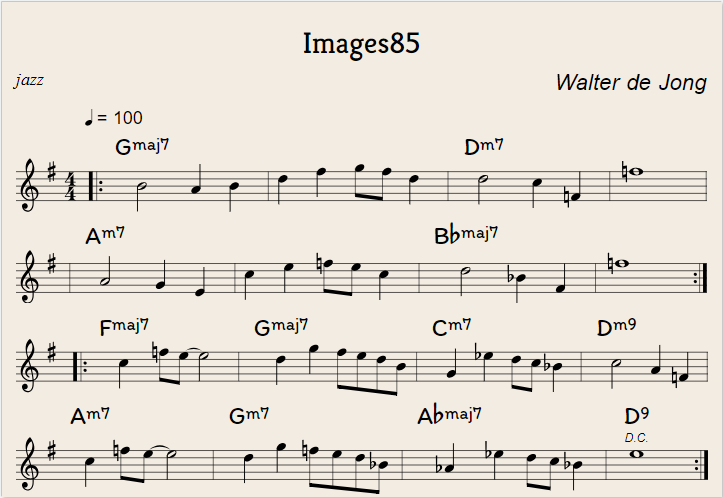

https://editor.drawthedots.com/?t=X%3A%201%0AT%3A%20Images85%0AC%3A%20Walter%20de%20Jong%0AM%3A%204%2F4%0AL%3A%201%2F8%0AQ%3A%20100%0AR%3A%20jazz%0AK%3A%20G%0A%7C%3A%20%22Gmaj7%22%20B4A2B2%20%7C%20d2f2gfd2%20%7C%20%22Dm7%22%20d4c2%3DF2%20%7C%20%3Df8%20%20%20%7C%20%0A%7C%22Am7%22%20A4G2E2%20%7C%20c2e2%3Dfec2%20%7C%22Bbmaj7%22%20d4_B2F2%20%7C%20%3Df8%20%3A%7C%0A%7C%3A%22Fmaj7%22%20c2%3Dfe-e4%20%7C%22Gmaj7%22%20d2g2fedB%20%7C%22Cm7%22%20G2_e2dc_B2%20%7C%22Dm9%22%20c4A2%3DF2%20%7C%0A%22Am7%22%20c2%3Dfe-e4%20%7C%22Gm7%22%20d2g2%3Dfed_B%20%7C%22Abmaj7%22%20_A2_e2dc_B2%20%7C%22D9%22%20!D.C.!%20e8%20%3A%7C%0A%0A%0A%0A
X: 1
T: Images85
C: Walter de Jong
M: 4/4
L: 1/8
Q: 100
R: jazz
K: G
|: "Gmaj7" B4A2B2 | d2f2gfd2 | "Dm7" d4c2=F2 | =f8 |
|"Am7" A4G2E2 | c2e2=fec2 |"Bbmaj7" d4_B2F2 | =f8 :|
|:"Fmaj7" c2=fe-e4 |"Gmaj7" d2g2fedB |"Cm7" G2_e2dc_B2 |"Dm9" c4A2=F2 |
"Am7" c2=fe-e4 |"Gm7" d2g2=fed_B |"Abmaj7" _A2_e2dc_B2 |"D9" !D.C.! e8 :|
c.1987